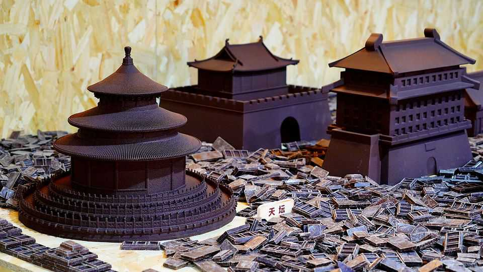

Will China ever learn to love chocolate?
Local chocolatiers are raising the bar

Aug 20th 2026
CHINA HAS more coffee-shop brands and more KFC branches than anywhere else on Earth. But chocolate has never hit the spot, with the average Chinese eating just 100g a year—a mere hundredth of what a French person guzzles. A few mass-market foreign brands—Mars, Ferrero, Nestlé and Hershey—account for four-fifths of Chinese consumption. “Of all the chocolate eaten worldwide, only 2% caresses Chinese tastebuds.
This may now be changing, thanks to a handful of Chinese chocolatiers springing up around the country. Most are artisanal shops, but some are investing in supply chains and building big businesses. Take Choc Revive. Based in Shanghai, the firm was founded in 2023 by Xie Liang, a fresh-produce trader. He cannot open shops quickly enough. From 80 outlets now he hopes to have 300 by the end of the year. Mr Xie says that his company had 160m yuan ($23.7m) in sales last year and hopes to quadruple that, or more, this year.
Choc Revive is trying to take chocolate local. It sources its own beans from Africa, but has set up an R&D unit in China and does its own roasting and grinding. Its big investments are intended to produce economies of scale, but the know-how it is accruing may spread and give rise to competitors. Another local chocolate company, Nibbo, has been winning international awards for its creamy sweets. Saturnbird, which started as a coffee grower in south-west China, is now planting its own cacao trees there.
Mr Xie’s concoction is 58 yuan for a 100g chunk—equivalent to a cheap meal for two. It is an awkward time to be selling premium products to belt-tightening consumers. Churning out the cheapest possible goods to undercut rivals is the usual formula. Milk-tea brands are a case in point.
Why are people paying out for chocolate? Mr Xie says that making chocolate with Chinese flavours such as longan, which is like a large lychee, seems to go down well. A simpler explanation is that, at long last, Chinese people are learning to love the most delectable flavour in creation. ■
Subscribers can sign up to Drum Tower, our new weekly newsletter, to understand what the world makes of China—and what China makes of the world.